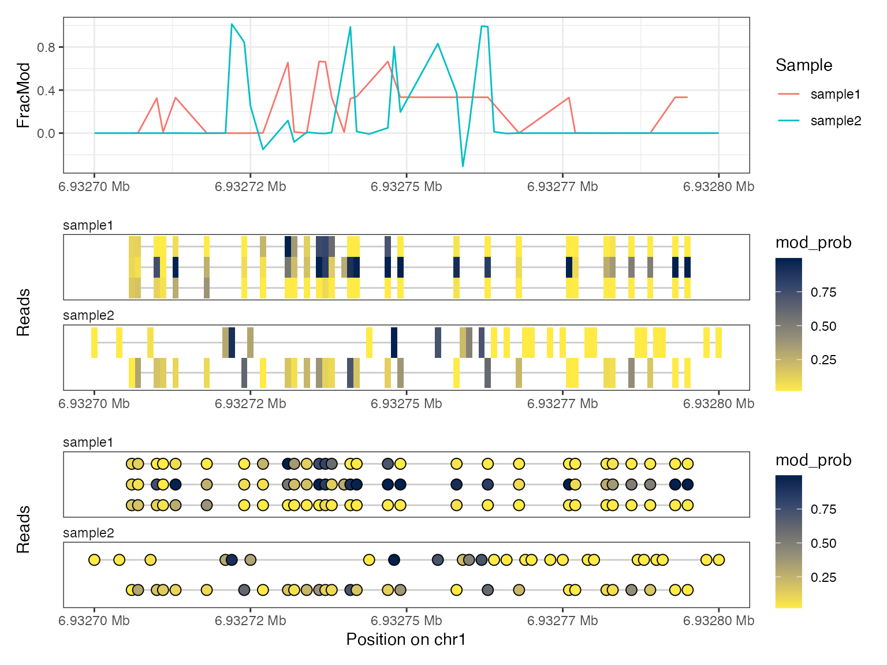

Exploring read-level footprinting data with `footprintR`
Source:vignettes/read-level-data.Rmd
read-level-data.RmdLoad data
We start the analysis by loading footprinting data at the level of
individual reads (for an example of working with summary-level data, see
vignette("using-footprintR")). Read-level data can be
extracted from modBam files (standard bam file with
modification data stored in MM and ML tags,
see SAMtags.pdf)
using readModBam(). This is the preferred way described
below.
Alternatively, read-level modification data can also be extracted
from modBam files using modkit (see
modkitExtract() for calling modkit from R and
readModkitExtract() to read the resulting output file).
This will require a local installation of modkit and may
only be of interest if specific modkit features should be
used that are not available otherwise.
The footprintR package contains small example
modBam files that were generated using the Dorado aligner:
# load packages
library(footprintR)
library(SummarizedExperiment)
# read-level 6mA data generated by 'dorado'
modbamfiles <- system.file("extdata",
c("6mA_1_10reads.bam", "6mA_2_10reads.bam"),
package = "footprintR")
names(modbamfiles) <- c("sample1", "sample2")Modification data is read from these files using
readModBam():
se <- readModBam(bamfiles = modbamfiles,
regions = "chr1:6940000-7000000",
modbase = "a",
verbose = TRUE)
#> extracting base modifications from modBAM files
#> opening input file /Users/runner/work/_temp/Library/footprintR/extdata/6mA_1_10reads.bam
#> reading alignments overlapping any of 1 regions
#> removed 1728 unaligned (e.g. soft-masked) of 20554 called bases
#> read 3 alignments
#> opening input file /Users/runner/work/_temp/Library/footprintR/extdata/6mA_2_10reads.bam
#> reading alignments overlapping any of 1 regions
#> removed 320 unaligned (e.g. soft-masked) of 10174 called bases
#> read 2 alignments
#> finding unique genomic positions...collapsed 14789 positions to 9266 unique ones
se
#> class: RangedSummarizedExperiment
#> dim: 9266 2
#> metadata(0):
#> assays(1): mod_prob
#> rownames(9266): chr1:6930410:+ chr1:6930415:+ ... chr1:6941622:-
#> chr1:6941631:-
#> rowData names(0):
#> colnames(2): sample1 sample2
#> colData names(4): sample modbase n_reads qscoreThis will create a RangedSummarizedExperiment object
with positions in rows:
# rows are positions...
rowRanges(se)
#> UnstitchedGPos object with 9266 positions and 0 metadata columns:
#> seqnames pos strand
#> <Rle> <integer> <Rle>
#> chr1:6930410:+ chr1 6930410 +
#> chr1:6930415:+ chr1 6930415 +
#> chr1:6930419:+ chr1 6930419 +
#> chr1:6930421:+ chr1 6930421 +
#> chr1:6930428:+ chr1 6930428 +
#> ... ... ... ...
#> chr1:6941611:- chr1 6941611 -
#> chr1:6941614:- chr1 6941614 -
#> chr1:6941620:- chr1 6941620 -
#> chr1:6941622:- chr1 6941622 -
#> chr1:6941631:- chr1 6941631 -
#> -------
#> seqinfo: 1 sequence from an unspecified genome; no seqlengthsJust like with summary-level data, columns correspond to samples
# ... and columns are samples
colData(se)
#> DataFrame with 2 rows and 4 columns
#> sample modbase n_reads qscore
#> <character> <character> <integer> <List>
#> sample1 sample1 a 3 14.1428,16.0127,20.3082
#> sample2 sample2 a 2 9.67461,13.66480The sample names are obtained from the input files (here
extractfiles), or if the files are not named will be
automatically assigned (each file corresponding to a separate
sample).
However, as each sample typically contains several reads (see
se$n_reads), the qscore column that stores the
quality scores for individual reads, is not a simple vector, but a list
of vectors, in which scores are grouped by sample. It may be needed to
unlist() it if a flat vector is needed:
se$qscore
#> List of length 2
#> names(2): sample1 sample2
unlist(se$qscore)
#> sample1 sample1 sample1 sample2 sample2
#> 14.14280 16.01270 20.30820 9.67461 13.66480Explore assay data
The single assay mod_prob is a DataFrame
with modification probabilities.
assayNames(se)
#> [1] "mod_prob"
m <- assay(se, "mod_prob")
m
#> DataFrame with 9266 rows and 2 columns
#> sample1 sample2
#> <SparseMatrix> <SparseMatrix>
#> chr1:6930410:+ 0:0:0 0:0.02
#> chr1:6930415:+ 0:0:0 0:0.02
#> chr1:6930419:+ 0:0:0 0:0.02
#> chr1:6930421:+ 0:0:0 0:0.02
#> chr1:6930428:+ 0:0:0 0:0.02
#> ... ... ...
#> chr1:6941611:- 0:0:0.052734375 0:0
#> chr1:6941614:- 0:0:0.130859375 0:0
#> chr1:6941620:- 0:0:0.068359375 0:0
#> chr1:6941622:- 0:0:0.060546875 0:0
#> chr1:6941631:- 0:0:0.056640625 0:0Again, to store read-level data for variable numbers of reads in each
sample, each column (sample) is not just a simple vector, but a
position-by-read SparseMatrix. If a simple matrix is
needed, in which columns correspond to reads instead of sample, it can
be created using as.matrix():
m$sample1
#> <9266 x 3 SparseMatrix> of type "double" [nzcount=8350 (30%)]:
#> sample1-233e48a7-f379-4dcf-9270-958231125563
#> [1,] 0
#> [2,] 0
#> [3,] 0
#> [4,] 0
#> [5,] 0
#> ... .
#> [9262,] 0.00000000
#> [9263,] 0.00000000
#> [9264,] 0.00000000
#> [9265,] 0.00000000
#> [9266,] 0.00000000
#> sample1-d52a5f6a-a60a-4f85-913e-eada84bfbfb9
#> [1,] 0
#> [2,] 0
#> [3,] 0
#> [4,] 0
#> [5,] 0
#> ... .
#> [9262,] 0.00000000
#> [9263,] 0.00000000
#> [9264,] 0.00000000
#> [9265,] 0.00000000
#> [9266,] 0.00000000
#> sample1-92e906ae-cddb-4347-a114-bf9137761a8d
#> [1,] 0
#> [2,] 0
#> [3,] 0
#> [4,] 0
#> [5,] 0
#> ... .
#> [9262,] 0.05273438
#> [9263,] 0.13085938
#> [9264,] 0.06835938
#> [9265,] 0.06054688
#> [9266,] 0.05664062
as.matrix(m)
#> <9266 x 5 SparseMatrix> of type "double" [nzcount=14789 (32%)]:
#> sample1-233e48a7-f379-4dcf-9270-958231125563 ...
#> chr1:6930410:+ 0 .
#> chr1:6930415:+ 0 .
#> chr1:6930419:+ 0 .
#> chr1:6930421:+ 0 .
#> chr1:6930428:+ 0 .
#> ... . .
#> chr1:6941611:- 0 .
#> chr1:6941614:- 0 .
#> chr1:6941620:- 0 .
#> chr1:6941622:- 0 .
#> chr1:6941631:- 0 .
#> sample2-d03efe3b-a45b-430b-9cb6-7e5882e4faf8
#> chr1:6930410:+ 0.02
#> chr1:6930415:+ 0.02
#> chr1:6930419:+ 0.02
#> chr1:6930421:+ 0.02
#> chr1:6930428:+ 0.02
#> ... .
#> chr1:6941611:- 0
#> chr1:6941614:- 0
#> chr1:6941620:- 0
#> chr1:6941622:- 0
#> chr1:6941631:- 0One advantage of the this grouping of reads per sample is that you
can easily perform per-sample operations using lapply
(returns a list) or endoapply (returns a
DataFrame):
lapply(m, ncol)
#> $sample1
#> [1] 3
#>
#> $sample2
#> [1] 2
endoapply(m, ncol)
#> DataFrame with 1 row and 2 columns
#> sample1 sample2
#> <integer> <integer>
#> 1 3 2The SparseMatrix objects do not store the zeros and thus
use much less memory compared to a normal (dense) matrix. However, you
have to be careful when interpreting the values in that matrix, as they
follow a specific convention:
Important: The zeros correspond to unobserved read/position combinations, while all values that are ‘implicitly’ called (with a modifictation probability of less than 5%) are represented with a value of 0.02.
That means if you would be manually calculating for example the average modification probability at a given position, taking the row mean would not be correct, as it would include the zero values that correspond to unobserved data:
# modification probabilities at position chr1:6928850:-
m["chr1:6928850:-", ]
#> DataFrame with 1 row and 2 columns
#> sample1 sample2
#> <SparseMatrix> <SparseMatrix>
#> chr1:6928850:- 0.623046875:0.099609375:0 0:0
# WRONG: take the mean of all values
lapply(m["chr1:6928850:-", ], rowMeans)
#> $sample1
#> [1] 0.2408854
#>
#> $sample2
#> [1] 0
# CORRECT: exclude the zeros
lapply(m["chr1:6928850:-", ], function(x) {
non_zero <- SparseArray::nzwhich(x != 0)
mean(x[non_zero])
})
#> $sample1
#> [1] 0.3613281
#>
#> $sample2
#> [1] NaNThis is however rarely needed, as there are convenience functions
that will exclude the unobserved (zero) values automatically for you.
For example, you can summarize the reads in each sample using
addReadsSummary() (see next section).
Summarize read-level data
Summarized data can be obtained from the read-level data by calculating a per-position summary over the reads in each sample:
se_summary <- addReadsSummary(se, keep.reads = TRUE,
statistics = c("Nmod", "Nvalid", "FracMod",
"Pmod", "AvgConf"))As discussed above, this will automatically exclude the non-observed
(zero) values from the data when calculating the modification
probability at each position (Pmod assay):
assay(se_summary, "Pmod")["chr1:6928850:-", ]
#> sample1 sample2
#> 0.3613281 NaNThe summary statistics to calculate are selected using the
statistics argument. By default,
addReadsSummary() will count the number of modified
(Nmod) and total (Nvalid) reads at each
position and sample, and calculate the fraction of modified bases from
the two (FracMod).
assay(se_summary, "Nmod")["chr1:6928850:-", ]
#> sample1 sample2
#> 1 0
assay(se_summary, "Nvalid")["chr1:6928850:-", ]
#> sample1 sample2
#> 2 0
assay(se_summary, "FracMod")["chr1:6928850:-", ]
#> sample1 sample2
#> 0.5 NaNIn the above example, we in addition also calculate the average
modification probability (Pmod) and the average confidence
of the modification calls per position (AvgConf). As we
have set keep.reads = TRUE, we get in addition also the
read-level assay from the input object (mod_prob) in which
the reads are grouped by sample:
# read-level data is retained in "mod_prob" assay
assayNames(se_summary)
#> [1] "Nmod" "Nvalid" "FracMod" "Pmod" "AvgConf" "mod_prob"
# ... which groups the reads by sample
assay(se_summary, "mod_prob")
#> DataFrame with 9266 rows and 2 columns
#> sample1 sample2
#> <SparseMatrix> <SparseMatrix>
#> chr1:6930410:+ 0:0:0 0:0.02
#> chr1:6930415:+ 0:0:0 0:0.02
#> chr1:6930419:+ 0:0:0 0:0.02
#> chr1:6930421:+ 0:0:0 0:0.02
#> chr1:6930428:+ 0:0:0 0:0.02
#> ... ... ...
#> chr1:6941611:- 0:0:0.052734375 0:0
#> chr1:6941614:- 0:0:0.130859375 0:0
#> chr1:6941620:- 0:0:0.068359375 0:0
#> chr1:6941622:- 0:0:0.060546875 0:0
#> chr1:6941631:- 0:0:0.056640625 0:0
# the dimensions of read-level `se` and summarized `se_summary` are identical
dim(se)
#> [1] 9266 2
dim(se_summary)
#> [1] 9266 2Plot data
The read-level data can then be visualized just like the
summary-level data using plotRegion, using the
tracks.reads argument instead of
tracks.summary to select the type of plot(s).
For reference, here we plot the summary-level data:
plotRegion(se_summary, region = "chr1:6932700-6932800",
tracks.summary = list(FracMod = "Point"))
… and here we plot the read-level data of the same region:
plotRegion(se, region = "chr1:6932700-6932800",
tracks.summary = NULL,
tracks.reads = list(mod_prob = "Heatmap"))
plotRegion(se, region = "chr1:6932700-6932800",
tracks.summary = NULL,
tracks.reads = list(mod_prob = "Lollipop"))
The x-axis in these plots is in “base-space”, meaning that it shows the coordinates of genomic bases on which modifications can be irregularly spaced. Alternatively, we can also generate these plot in “modbase-space”, in which only modified bases are shown and the gaps between them are removed:
plotRegion(se, region = "chr1:6932700-6932800",
tracks.summary = NULL,
tracks.reads = list(mod_prob = "Heatmap"),
modbaseSpace = TRUE)
plotRegion(se, region = "chr1:6932700-6932800",
tracks.summary = NULL,
tracks.reads = list(mod_prob = "Lollipop"),
modbaseSpace = TRUE)As mentioned above, the read-level data is still contained in the
summary object se_summary, so we can plot both
summary-level and read-level data simultaneously with this object as
input:
plotRegion(se_summary, region = "chr1:6932700-6932800",
tracks.summary = list(FracMod = c("Smooth")),
tracks.reads = list(mod_prob = c("Heatmap", "Lollipop")))
Session info
sessionInfo()
#> R version 4.4.1 (2024-06-14)
#> Platform: aarch64-apple-darwin20
#> Running under: macOS Sonoma 14.6.1
#>
#> Matrix products: default
#> BLAS: /Library/Frameworks/R.framework/Versions/4.4-arm64/Resources/lib/libRblas.0.dylib
#> LAPACK: /Library/Frameworks/R.framework/Versions/4.4-arm64/Resources/lib/libRlapack.dylib; LAPACK version 3.12.0
#>
#> locale:
#> [1] en_US.UTF-8/en_US.UTF-8/en_US.UTF-8/C/en_US.UTF-8/en_US.UTF-8
#>
#> time zone: UTC
#> tzcode source: internal
#>
#> attached base packages:
#> [1] stats4 stats graphics grDevices utils datasets methods
#> [8] base
#>
#> other attached packages:
#> [1] SummarizedExperiment_1.35.1 Biobase_2.65.0
#> [3] GenomicRanges_1.57.1 GenomeInfoDb_1.41.1
#> [5] IRanges_2.39.2 S4Vectors_0.43.2
#> [7] BiocGenerics_0.51.0 MatrixGenerics_1.17.0
#> [9] matrixStats_1.3.0 footprintR_0.1.1
#>
#> loaded via a namespace (and not attached):
#> [1] tidyselect_1.2.1 viridisLite_0.4.2
#> [3] dplyr_1.1.4 farver_2.1.2
#> [5] Biostrings_2.73.1 bitops_1.0-8
#> [7] fastmap_1.2.0 SingleCellExperiment_1.27.2
#> [9] RCurl_1.98-1.16 GenomicAlignments_1.41.0
#> [11] XML_3.99-0.17 digest_0.6.37
#> [13] lifecycle_1.0.4 magrittr_2.0.3
#> [15] compiler_4.4.1 rlang_1.1.4
#> [17] sass_0.4.9 tools_4.4.1
#> [19] utf8_1.2.4 yaml_2.3.10
#> [21] data.table_1.16.0 rtracklayer_1.65.0
#> [23] knitr_1.48 S4Arrays_1.5.7
#> [25] labeling_0.4.3 curl_5.2.2
#> [27] DelayedArray_0.31.11 abind_1.4-5
#> [29] BiocParallel_1.39.0 withr_3.0.1
#> [31] purrr_1.0.2 desc_1.4.3
#> [33] grid_4.4.1 fansi_1.0.6
#> [35] beachmat_2.21.5 colorspace_2.1-1
#> [37] ggplot2_3.5.1 scales_1.3.0
#> [39] cli_3.6.3 rmarkdown_2.28
#> [41] crayon_1.5.3 ragg_1.3.2
#> [43] generics_0.1.3 httr_1.4.7
#> [45] rjson_0.2.22 scuttle_1.15.4
#> [47] cachem_1.1.0 zlibbioc_1.51.1
#> [49] parallel_4.4.1 XVector_0.45.0
#> [51] restfulr_0.0.15 vctrs_0.6.5
#> [53] Matrix_1.7-0 jsonlite_1.8.8
#> [55] patchwork_1.2.0 systemfonts_1.1.0
#> [57] jquerylib_0.1.4 tidyr_1.3.1
#> [59] glue_1.7.0 pkgdown_2.1.0.9000
#> [61] codetools_0.2-20 gtable_0.3.5
#> [63] BiocIO_1.15.2 UCSC.utils_1.1.0
#> [65] munsell_0.5.1 tibble_3.2.1
#> [67] pillar_1.9.0 htmltools_0.5.8.1
#> [69] GenomeInfoDbData_1.2.12 BSgenome_1.73.0
#> [71] R6_2.5.1 textshaping_0.4.0
#> [73] evaluate_0.24.0 lattice_0.22-6
#> [75] highr_0.11 Rsamtools_2.21.1
#> [77] bslib_0.8.0 Rcpp_1.0.13
#> [79] SparseArray_1.5.31 xfun_0.47
#> [81] fs_1.6.4 pkgconfig_2.0.3